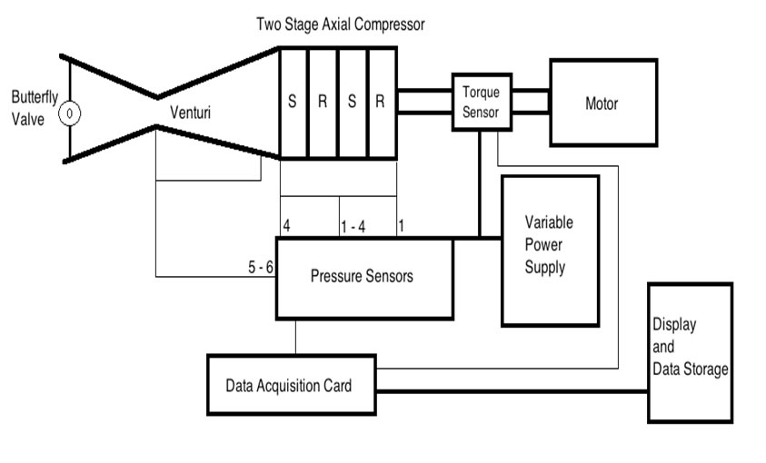
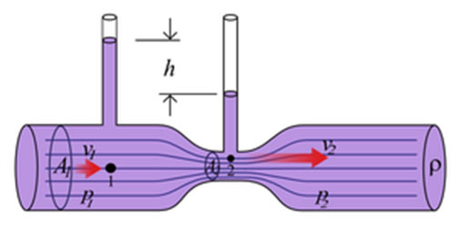
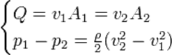
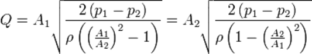

Fig: Schematic of Experimental Setup
Theoretical Formulation
Pressure Ratio
The Pressure Ratio of a compressor is defined as the ratio of outlet pressure to the inlet pressure of the compressor.
Mass flow rate
The mass flow rate through the compressor is done using the venturi. A schematic of the venturi is as under

Schematic diagram of a venturi
The determination of mass flow rate through the compressor makes use of the assumption, that the flow is not only subsonic but incompressible as well. This is allowed as the maximum blade tip velocities are of the order of 50 m/s (corresponding to M < 0.2 for ambient conditions) and the compressor sucks in air from the ambient, which is practically at rest (i.e. Inlet velocity, U ≈ 0 m/s)
The expression for the mass flow rates is determined from the continuity and momentum equations as follows
Given a volume flow rate, Q, we have, the continuity (dropping the density term as it is constant for incompressible flow) and momentum (Bernoulli equation) equations as under

Simplifying we have,

Assuming circular cross-section, the area ratio in the above formulae can be replaced by the square of the ratio of diameters.
For the venturi used
D1 = 14 inches
D2 = 8.5 inches
Density of air, ρ = 1.2 kg/m3
Hence, Q = 0.0508432 * , where ∆P is the pressure drop across the venturi
So, Mass flow rate, m = ρ*Q = 0.061012 * 
|